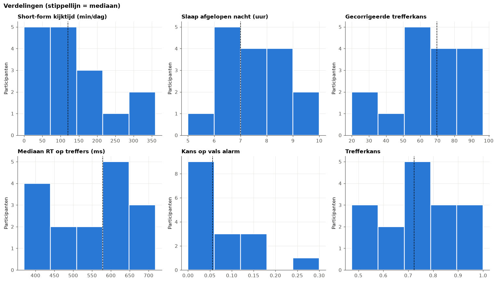
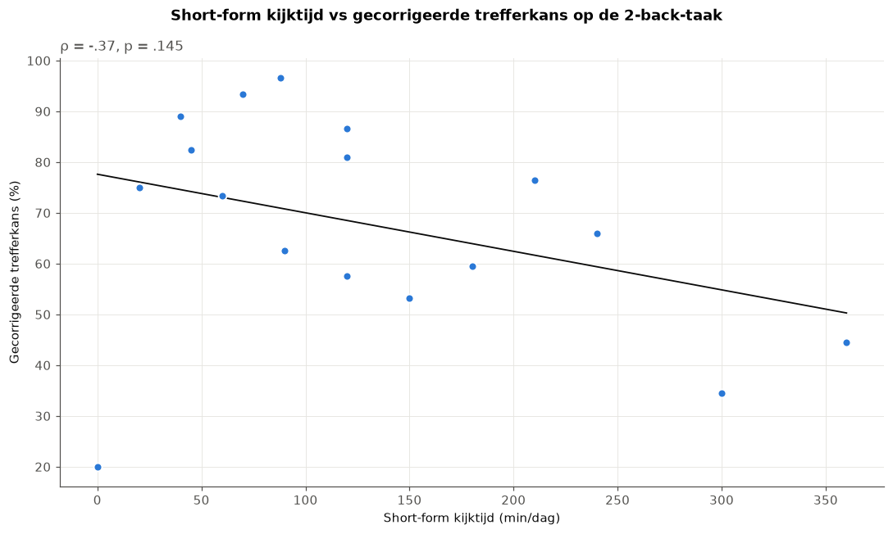

De relatie tussen dagelijks gebruik van short-form video’s en werkgeheugenprestatie bij studenten¶
Onderzoeksvraag: Wat is het verband tussen de gemiddelde tijd per dag die studenten aan short-form video's besteden en hun werkgeheugenprestatie op een 2-back-taak?
Hypothese:
- Hoofdvoorspelling: Hoe meer minuten per dag een student aan short-form video's besteedt, hoe lager de accuratesse op de 2-back-taak is.
- Nevenvoorspelling: Hoe meer minuten per dag een student aan short-form video's besteedt, hoe langer de reactietijden op de 2-back-taak zijn.
Survey¶
| Vraag | Antwoord | Type |
|---|---|---|
| Leeftijd | jaar | int |
| Gender | man, vrouw, anders, zeg ik liever niet | enum |
| Shortform duur per dag | min | int |
| Shortform bron | opgezocht, geschat | enum |
| Slaap duur | uur | int |
Task¶
N-Back test (N = 2) afgenomen op PsyToolkit (https://www.psytoolkit.org/c/3.7.6/survey?s=m8JRm)
Onderzoek¶
| Rol | Variabele | Bron |
|---|---|---|
| Onafhankelijke variabele | shortform_min: zelfgerapporteerde minuten per dag |
survey |
| Primaire uitkomstmaat | accuracy: gecorrigeerde trefferkans |
experiment_data/ |
| Secundaire uitkomstmaat | rt_median: mediaan reactietijd op treffers in ms |
experiment_data/ |
| Covariate | slaap: zelfgerapporteerde aantal uur geslapen afgelopen nacht |
survey |
| Sensitiviteitsanalyse | bron_label: opgezocht of geschat |
survey |
Imports, globals and helpers¶
from pathlib import Path
import numpy as np
import pandas as pd
import matplotlib.pyplot as plt
from scipy import stats
import pingouin as pg
from dataclasses import dataclass
@dataclass(frozen=True)
class SpearmanResult:
label: str
n: int
df: int
rho: float
p: float
def apa(self) -> str:
return f"r_s({self.df}) = {fmt(self.rho)}, p {fmt_p(self.p)}"
def fmt(x: float, dec: int = 2) -> str:
s = f"{x:.{dec}f}"
return s.replace("0.", ".", 1) if abs(x) < 1 else s
def fmt_p(p: float) -> str:
return "< .001" if p < .001 else f"= {fmt(p, 3)}"
ALPHA = 0.05
DATA = Path("data")
pd.set_option("display.precision", 3)
pd.set_option("display.width", 140)
# style ✨
BLUE, INK, MUTED = "#2a78d6", "#0b0b0b", "#52514e"
plt.rcParams.update({
"figure.dpi": 110, "axes.spines.top": False, "axes.spines.right": False,
"axes.edgecolor": MUTED, "axes.labelcolor": INK, "xtick.color": MUTED, "ytick.color": MUTED,
"axes.grid": True, "grid.color": "#e6e5e1", "grid.linewidth": 0.6, "axes.axisbelow": True,
"font.size": 10, "axes.titlesize": 11, "axes.titleweight": "bold",
})
Survey data¶
Codes (survey.txt):
consent: 1 = ja, 2 = neegender: 1 = man, 2 = vrouw, 3 = anders, 4 = zeg ik liever nietshortform_bron: 1 = opgezocht, 2 = geschat
# read data from csv
survey = pd.read_csv("./data/data.csv")
# convert and drop colums
survey["uuid"] = survey["participant"].str.split(".").str[1]
survey["consent"] = survey["consent"].map({1: "ja", 2: "nee"})
survey["gender_label"] = survey["gender"].map({1: "man", 2: "vrouw", 3: "anders", 4: "zeg ik liever niet"})
survey["bron_label"] = survey["shortform_bron"].map({1: "opgezocht", 2: "geschat"})
survey = survey[["uuid", "consent", "leeftijd", "gender_label", "shortform_min", "bron_label", "slaap"]]
display(survey)
| uuid | consent | leeftijd | gender_label | shortform_min | bron_label | slaap | |
|---|---|---|---|---|---|---|---|
| 0 | 06ac6dd9-2581-4147-a11b-08da3cbed35e | ja | 21.0 | vrouw | 88.0 | opgezocht | 6.0 |
| 1 | 10ecf204-6e66-479d-9418-7c05b860ee7e | ja | 23.0 | vrouw | 20.0 | opgezocht | 9.0 |
| 2 | 252c0ccc-6b8b-48b5-968b-4fa9832ee01f | ja | 21.0 | man | 180.0 | opgezocht | 6.0 |
| 3 | 2614051e-694e-4476-80c7-c5a2d1c9e8e5 | ja | 20.0 | anders | 60.0 | opgezocht | 8.0 |
| 4 | 3798b14a-1955-49fb-a3b7-26004923a6ac | ja | 20.0 | vrouw | 40.0 | opgezocht | 10.0 |
| 5 | 3e84d5fd-2dcf-40f0-bb08-43427945129d | ja | 19.0 | vrouw | 360.0 | opgezocht | 7.0 |
| 6 | 63359fbc-512e-4b0c-b45a-fbcc668dd068 | ja | 20.0 | man | 120.0 | geschat | 6.0 |
| 7 | 73b3b8e0-d90c-40b1-95ae-7500b6d1896f | ja | 20.0 | vrouw | 240.0 | opgezocht | 7.0 |
| 8 | 75799c25-1be6-4e28-ab18-b2b888f8b6f9 | ja | 23.0 | man | 90.0 | geschat | 6.0 |
| 9 | 8d86fb91-4287-41d8-82f3-ecd43f2e4b7d | nee | NaN | NaN | NaN | NaN | NaN |
| 10 | 8f8d17b9-d72d-4f76-b254-a842afa2a753 | ja | 19.0 | vrouw | 150.0 | opgezocht | 7.0 |
| 11 | a601c3ea-a71e-4160-a2b9-d798da2810b1 | ja | 21.0 | vrouw | 300.0 | opgezocht | 5.0 |
| 12 | a65ce376-b73a-4cfe-88f0-f4a384e57a0b | ja | 17.0 | zeg ik liever niet | 0.0 | opgezocht | 8.0 |
| 13 | b4f1e5ef-4abe-4cdf-b150-71deacdf3d7f | ja | 19.0 | man | 120.0 | geschat | 8.0 |
| 14 | c4e43bb0-1dce-4bba-831a-db3b48fb965a | ja | 22.0 | man | 45.0 | geschat | 8.0 |
| 15 | cd8883b2-12e3-437d-b1bb-385ada445af4 | ja | 22.0 | vrouw | 120.0 | geschat | 7.0 |
| 16 | d104c9d1-4305-4dbc-abb5-b9e7e2312b33 | ja | 19.0 | man | 210.0 | geschat | 6.0 |
| 17 | d988408f-a7aa-4c7b-bea8-dd7286bc4976 | ja | 21.0 | man | 70.0 | opgezocht | 7.0 |
| 18 | dba49510-8676-447f-9c54-c3cbe940e907 | ja | 20.0 | vrouw | 300.0 | geschat | 9.0 |
Task data¶
Voor elk participant die de task heeft afgerond is er een data bestand met de resultaten in data/experiment_data/.
Elk bestand bestaad uit rijen, een rij stelt een trail voor. Er waren 3 tests (blok) van 25 trails, geeft: 3 x 25 = 75 rijen per bestand.
Uit de door PsyToolkit geleverde r script data/analize_nback2.r, hebben we de volgende kolommen afgeleidt:
| kolom | naam | betekenis |
|---|---|---|
| 1 | block |
1 = practice, 2–3 = test |
| 2 | trial |
trial nummer in de blok |
| 3 | target |
1 = de letter is hetzelfde als twee ervoor |
| 4 | correct |
1 = correct response |
| 5–7 | hit, miss, false_alarm |
uitkomst |
| 8 | rt |
reactietijd in ms; 3000 = geen invoer |
| 9–12 | niet relevant |
trial_cols = ["block", "trial", "target", "correct", "hit", "miss", "false_alarm", "rt", "9", "10", "11", "12"]
# load by iterating over the files in experiment_data
frames = []
for file in (DATA / "experiment_data").glob("nback2.*.txt"):
df = pd.read_csv(file, sep=r"\s+", header=None, names=trial_cols)
df["uuid"] = file.name.split(".")[3]
frames.append(df)
trials = pd.concat(frames, ignore_index=True)
trials = trials[["uuid", "block", "trial", "target", "correct", "hit", "miss", "false_alarm", "rt"]]
# remove incomplete entries (survey only contains completed entries)
trials = trials[trials["uuid"].isin(survey.uuid.unique())]
# remove practice trials (block 2-3)
trials = trials[trials["block"] > 1]
print(f"{len(trials.uuid.unique())} participanten, {len(trials)} trials")
display(trials)
18 participanten, 900 trials
| uuid | block | trial | target | correct | hit | miss | false_alarm | rt | |
|---|---|---|---|---|---|---|---|---|---|
| 25 | a601c3ea-a71e-4160-a2b9-d798da2810b1 | 2 | 1 | 0 | 1 | 0 | 0 | 0 | 3000 |
| 26 | a601c3ea-a71e-4160-a2b9-d798da2810b1 | 2 | 2 | 0 | 1 | 0 | 0 | 0 | 3000 |
| 27 | a601c3ea-a71e-4160-a2b9-d798da2810b1 | 2 | 3 | 0 | 1 | 0 | 0 | 0 | 3000 |
| 28 | a601c3ea-a71e-4160-a2b9-d798da2810b1 | 2 | 4 | 0 | 1 | 0 | 0 | 0 | 3000 |
| 29 | a601c3ea-a71e-4160-a2b9-d798da2810b1 | 2 | 5 | 1 | 1 | 1 | 0 | 0 | 972 |
| ... | ... | ... | ... | ... | ... | ... | ... | ... | ... |
| 1345 | 8f8d17b9-d72d-4f76-b254-a842afa2a753 | 3 | 21 | 0 | 1 | 0 | 0 | 0 | 3000 |
| 1346 | 8f8d17b9-d72d-4f76-b254-a842afa2a753 | 3 | 22 | 0 | 1 | 0 | 0 | 0 | 3000 |
| 1347 | 8f8d17b9-d72d-4f76-b254-a842afa2a753 | 3 | 23 | 0 | 1 | 0 | 0 | 0 | 3000 |
| 1348 | 8f8d17b9-d72d-4f76-b254-a842afa2a753 | 3 | 24 | 0 | 1 | 0 | 0 | 0 | 3000 |
| 1349 | 8f8d17b9-d72d-4f76-b254-a842afa2a753 | 3 | 25 | 0 | 1 | 0 | 0 | 0 | 3000 |
900 rows × 9 columns
Task measures¶
De volgende task measures worden berekend over de test blocks:
- Hit rate = hit / targets
- False alarm rate = false alarms / non-targets
- Accuracy = verhouding van alle trials dat correct is
- Reaction time median
- Reaction time mean
def task_measures(tr: pd.DataFrame) -> pd.DataFrame:
def one(d):
target = d[d.target == 1]
non_target = d[d.target == 0]
hits = target.correct.sum()
fas = (non_target.false_alarm).sum()
hit_rt = target.loc[target.correct == 1, "rt"]
hit_rate = hits / len(target)
fa_rate = fas / len(non_target)
accuracy = (hit_rate - fa_rate) * 100
return pd.Series({
"n_trials": len(d),
"n_targets": len(target),
"hits": hits,
"false_alarms": fas,
"hit_rate": hit_rate,
"fa_rate": fa_rate,
"accuracy": accuracy,
"rt_median": hit_rt.median(),
"rt_mean": hit_rt.mean(),
"n_rt": len(hit_rt),
})
return tr.groupby("uuid")[tr.columns.drop("uuid")].apply(one)
dataset = survey.merge(task_measures(trials), left_on="uuid", right_index=True, how="left")
display(dataset)
| uuid | consent | leeftijd | gender_label | shortform_min | bron_label | slaap | n_trials | n_targets | hits | false_alarms | hit_rate | fa_rate | accuracy | rt_median | rt_mean | n_rt | |
|---|---|---|---|---|---|---|---|---|---|---|---|---|---|---|---|---|---|
| 0 | 06ac6dd9-2581-4147-a11b-08da3cbed35e | ja | 21.0 | vrouw | 88.0 | opgezocht | 6.0 | 50.0 | 20.0 | 20.0 | 1.0 | 1.000 | 0.033 | 96.667 | 400.5 | 451.200 | 20.0 |
| 1 | 10ecf204-6e66-479d-9418-7c05b860ee7e | ja | 23.0 | vrouw | 20.0 | opgezocht | 9.0 | 50.0 | 20.0 | 15.0 | 0.0 | 0.750 | 0.000 | 75.000 | 563.0 | 560.133 | 15.0 |
| 2 | 252c0ccc-6b8b-48b5-968b-4fa9832ee01f | ja | 21.0 | man | 180.0 | opgezocht | 6.0 | 50.0 | 16.0 | 10.0 | 1.0 | 0.625 | 0.029 | 59.559 | 642.5 | 661.900 | 10.0 |
| 3 | 2614051e-694e-4476-80c7-c5a2d1c9e8e5 | ja | 20.0 | anders | 60.0 | opgezocht | 8.0 | 50.0 | 15.0 | 11.0 | 0.0 | 0.733 | 0.000 | 73.333 | 641.0 | 641.000 | 11.0 |
| 4 | 3798b14a-1955-49fb-a3b7-26004923a6ac | ja | 20.0 | vrouw | 40.0 | opgezocht | 10.0 | 50.0 | 12.0 | 11.0 | 1.0 | 0.917 | 0.026 | 89.035 | 422.0 | 443.000 | 11.0 |
| 5 | 3e84d5fd-2dcf-40f0-bb08-43427945129d | ja | 19.0 | vrouw | 360.0 | opgezocht | 7.0 | 50.0 | 14.0 | 7.0 | 2.0 | 0.500 | 0.056 | 44.444 | 453.0 | 608.429 | 7.0 |
| 6 | 63359fbc-512e-4b0c-b45a-fbcc668dd068 | ja | 20.0 | man | 120.0 | geschat | 6.0 | 50.0 | 20.0 | 20.0 | 4.0 | 1.000 | 0.133 | 86.667 | 429.0 | 517.750 | 20.0 |
| 7 | 73b3b8e0-d90c-40b1-95ae-7500b6d1896f | ja | 20.0 | vrouw | 240.0 | opgezocht | 7.0 | 50.0 | 14.0 | 10.0 | 2.0 | 0.714 | 0.056 | 65.873 | 701.0 | 710.000 | 10.0 |
| 8 | 75799c25-1be6-4e28-ab18-b2b888f8b6f9 | ja | 23.0 | man | 90.0 | geschat | 6.0 | 50.0 | 10.0 | 7.0 | 3.0 | 0.700 | 0.075 | 62.500 | 616.0 | 617.429 | 7.0 |
| 9 | 8d86fb91-4287-41d8-82f3-ecd43f2e4b7d | nee | NaN | NaN | NaN | NaN | NaN | NaN | NaN | NaN | NaN | NaN | NaN | NaN | NaN | NaN | NaN |
| 10 | 8f8d17b9-d72d-4f76-b254-a842afa2a753 | ja | 19.0 | vrouw | 150.0 | opgezocht | 7.0 | 50.0 | 14.0 | 9.0 | 4.0 | 0.643 | 0.111 | 53.175 | 594.0 | 621.556 | 9.0 |
| 11 | a601c3ea-a71e-4160-a2b9-d798da2810b1 | ja | 21.0 | vrouw | 300.0 | opgezocht | 5.0 | 50.0 | 19.0 | 9.0 | 4.0 | 0.474 | 0.129 | 34.465 | 718.0 | 767.000 | 9.0 |
| 12 | a65ce376-b73a-4cfe-88f0-f4a384e57a0b | ja | 17.0 | zeg ik liever niet | 0.0 | opgezocht | 8.0 | 50.0 | 10.0 | 5.0 | 12.0 | 0.500 | 0.300 | 20.000 | 370.0 | 378.600 | 5.0 |
| 13 | b4f1e5ef-4abe-4cdf-b150-71deacdf3d7f | ja | 19.0 | man | 120.0 | geschat | 8.0 | 50.0 | 14.0 | 10.0 | 5.0 | 0.714 | 0.139 | 57.540 | 493.0 | 694.900 | 10.0 |
| 14 | c4e43bb0-1dce-4bba-831a-db3b48fb965a | ja | 22.0 | man | 45.0 | geschat | 8.0 | 50.0 | 17.0 | 14.0 | 0.0 | 0.824 | 0.000 | 82.353 | 548.5 | 511.643 | 14.0 |
| 15 | cd8883b2-12e3-437d-b1bb-385ada445af4 | ja | 22.0 | vrouw | 120.0 | geschat | 7.0 | 50.0 | 15.0 | 13.0 | 2.0 | 0.867 | 0.057 | 80.952 | 665.0 | 653.692 | 13.0 |
| 16 | d104c9d1-4305-4dbc-abb5-b9e7e2312b33 | ja | 19.0 | man | 210.0 | geschat | 6.0 | 50.0 | 13.0 | 11.0 | 3.0 | 0.846 | 0.081 | 76.507 | 642.0 | 681.273 | 11.0 |
| 17 | d988408f-a7aa-4c7b-bea8-dd7286bc4976 | ja | 21.0 | man | 70.0 | opgezocht | 7.0 | 50.0 | 15.0 | 14.0 | 0.0 | 0.933 | 0.000 | 93.333 | 400.5 | 496.071 | 14.0 |
| 18 | dba49510-8676-447f-9c54-c3cbe940e907 | ja | 20.0 | vrouw | 300.0 | geschat | 9.0 | 50.0 | 19.0 | 0.0 | 0.0 | 0.000 | 0.000 | 0.000 | NaN | NaN | 0.0 |
Exclusion criteria¶
Deelnemers worden uitgesloten met:
- geen consent
- ontbrekende gegevens
- gecorrigeerde trefferkans van nul of lager
num_full = len(dataset)
excluded = {}
def exclude(df: pd.DataFrame, keep: pd.Series, reden: str) -> pd.DataFrame:
excluded[reden] = int((~keep).sum())
return df[keep]
dataset = exclude(dataset, dataset["consent"] == "ja", "het ontbreken van toestemming")
dataset = exclude(dataset, dataset.notna().all(axis=1), "ontbrekende gegevens")
dataset = exclude(dataset, dataset["accuracy"] > 0, "een gecorrigeerde trefferkans van nul of lager")
dataset = dataset.reset_index(drop=True)
print(f"Totaal participanten: {num_full}\nParticipanten excl. criteria: {len(dataset)}")
print("Uitgesloten:", excluded)
dataset
Totaal participanten: 19
Participanten excl. criteria: 17
Uitgesloten: {'het ontbreken van toestemming': 1, 'ontbrekende gegevens': 1, 'een gecorrigeerde trefferkans van nul of lager': 0}
| uuid | consent | leeftijd | gender_label | shortform_min | bron_label | slaap | n_trials | n_targets | hits | false_alarms | hit_rate | fa_rate | accuracy | rt_median | rt_mean | n_rt | |
|---|---|---|---|---|---|---|---|---|---|---|---|---|---|---|---|---|---|
| 0 | 06ac6dd9-2581-4147-a11b-08da3cbed35e | ja | 21.0 | vrouw | 88.0 | opgezocht | 6.0 | 50.0 | 20.0 | 20.0 | 1.0 | 1.000 | 0.033 | 96.667 | 400.5 | 451.200 | 20.0 |
| 1 | 10ecf204-6e66-479d-9418-7c05b860ee7e | ja | 23.0 | vrouw | 20.0 | opgezocht | 9.0 | 50.0 | 20.0 | 15.0 | 0.0 | 0.750 | 0.000 | 75.000 | 563.0 | 560.133 | 15.0 |
| 2 | 252c0ccc-6b8b-48b5-968b-4fa9832ee01f | ja | 21.0 | man | 180.0 | opgezocht | 6.0 | 50.0 | 16.0 | 10.0 | 1.0 | 0.625 | 0.029 | 59.559 | 642.5 | 661.900 | 10.0 |
| 3 | 2614051e-694e-4476-80c7-c5a2d1c9e8e5 | ja | 20.0 | anders | 60.0 | opgezocht | 8.0 | 50.0 | 15.0 | 11.0 | 0.0 | 0.733 | 0.000 | 73.333 | 641.0 | 641.000 | 11.0 |
| 4 | 3798b14a-1955-49fb-a3b7-26004923a6ac | ja | 20.0 | vrouw | 40.0 | opgezocht | 10.0 | 50.0 | 12.0 | 11.0 | 1.0 | 0.917 | 0.026 | 89.035 | 422.0 | 443.000 | 11.0 |
| 5 | 3e84d5fd-2dcf-40f0-bb08-43427945129d | ja | 19.0 | vrouw | 360.0 | opgezocht | 7.0 | 50.0 | 14.0 | 7.0 | 2.0 | 0.500 | 0.056 | 44.444 | 453.0 | 608.429 | 7.0 |
| 6 | 63359fbc-512e-4b0c-b45a-fbcc668dd068 | ja | 20.0 | man | 120.0 | geschat | 6.0 | 50.0 | 20.0 | 20.0 | 4.0 | 1.000 | 0.133 | 86.667 | 429.0 | 517.750 | 20.0 |
| 7 | 73b3b8e0-d90c-40b1-95ae-7500b6d1896f | ja | 20.0 | vrouw | 240.0 | opgezocht | 7.0 | 50.0 | 14.0 | 10.0 | 2.0 | 0.714 | 0.056 | 65.873 | 701.0 | 710.000 | 10.0 |
| 8 | 75799c25-1be6-4e28-ab18-b2b888f8b6f9 | ja | 23.0 | man | 90.0 | geschat | 6.0 | 50.0 | 10.0 | 7.0 | 3.0 | 0.700 | 0.075 | 62.500 | 616.0 | 617.429 | 7.0 |
| 9 | 8f8d17b9-d72d-4f76-b254-a842afa2a753 | ja | 19.0 | vrouw | 150.0 | opgezocht | 7.0 | 50.0 | 14.0 | 9.0 | 4.0 | 0.643 | 0.111 | 53.175 | 594.0 | 621.556 | 9.0 |
| 10 | a601c3ea-a71e-4160-a2b9-d798da2810b1 | ja | 21.0 | vrouw | 300.0 | opgezocht | 5.0 | 50.0 | 19.0 | 9.0 | 4.0 | 0.474 | 0.129 | 34.465 | 718.0 | 767.000 | 9.0 |
| 11 | a65ce376-b73a-4cfe-88f0-f4a384e57a0b | ja | 17.0 | zeg ik liever niet | 0.0 | opgezocht | 8.0 | 50.0 | 10.0 | 5.0 | 12.0 | 0.500 | 0.300 | 20.000 | 370.0 | 378.600 | 5.0 |
| 12 | b4f1e5ef-4abe-4cdf-b150-71deacdf3d7f | ja | 19.0 | man | 120.0 | geschat | 8.0 | 50.0 | 14.0 | 10.0 | 5.0 | 0.714 | 0.139 | 57.540 | 493.0 | 694.900 | 10.0 |
| 13 | c4e43bb0-1dce-4bba-831a-db3b48fb965a | ja | 22.0 | man | 45.0 | geschat | 8.0 | 50.0 | 17.0 | 14.0 | 0.0 | 0.824 | 0.000 | 82.353 | 548.5 | 511.643 | 14.0 |
| 14 | cd8883b2-12e3-437d-b1bb-385ada445af4 | ja | 22.0 | vrouw | 120.0 | geschat | 7.0 | 50.0 | 15.0 | 13.0 | 2.0 | 0.867 | 0.057 | 80.952 | 665.0 | 653.692 | 13.0 |
| 15 | d104c9d1-4305-4dbc-abb5-b9e7e2312b33 | ja | 19.0 | man | 210.0 | geschat | 6.0 | 50.0 | 13.0 | 11.0 | 3.0 | 0.846 | 0.081 | 76.507 | 642.0 | 681.273 | 11.0 |
| 16 | d988408f-a7aa-4c7b-bea8-dd7286bc4976 | ja | 21.0 | man | 70.0 | opgezocht | 7.0 | 50.0 | 15.0 | 14.0 | 0.0 | 0.933 | 0.000 | 93.333 | 400.5 | 496.071 | 14.0 |
Descriptive statistics¶
N = len(dataset)
age_stat = dataset.leeftijd.describe().to_dict()
gender_stat = dataset.gender_label.value_counts().to_dict()
print(f"N = {N}")
print(f"Leeftijd: M = {age_stat['mean']:.1f}, SD = {age_stat['std']:.1f}, range {int(age_stat['min'])}-{int(age_stat['max'])}")
print("Gender:", gender_stat)
print("Short-form bron:", dataset.bron_label.value_counts().to_dict())
desc_vars = ["shortform_min", "slaap", "accuracy", "hit_rate", "fa_rate", "rt_median"]
desc = dataset[desc_vars].agg(["count", "mean", "std", "median", "min", "max", "skew"]).T
display(desc)
N = 17
Leeftijd: M = 20.4, SD = 1.6, range 17-23
Gender: {'vrouw': 8, 'man': 7, 'anders': 1, 'zeg ik liever niet': 1}
Short-form bron: {'opgezocht': 11, 'geschat': 6}
| count | mean | std | median | min | max | skew | |
|---|---|---|---|---|---|---|---|
| shortform_min | 17.0 | 130.176 | 99.903 | 120.000 | 0.000 | 360.000 | 0.952 |
| slaap | 17.0 | 7.118 | 1.269 | 7.000 | 5.000 | 10.000 | 0.585 |
| accuracy | 17.0 | 67.730 | 21.207 | 73.333 | 20.000 | 96.667 | -0.734 |
| hit_rate | 17.0 | 0.749 | 0.167 | 0.733 | 0.474 | 1.000 | -0.151 |
| fa_rate | 17.0 | 0.072 | 0.076 | 0.056 | 0.000 | 0.300 | 1.765 |
| rt_median | 17.0 | 547.000 | 116.363 | 563.000 | 370.000 | 718.000 | -0.141 |
labels = {
"shortform_min": "Short-form kijktijd (min/dag)",
"slaap": "Slaap afgelopen nacht (uur)",
"accuracy": "Gecorrigeerde trefferkans",
"rt_median": "Mediaan RT op treffers (ms)",
"fa_rate": "Kans op vals alarm",
"hit_rate": "Trefferkans"
}
fig, axes = plt.subplots(2, 3, figsize=(14, 8))
for ax, (v, lab) in zip(axes.flat, labels.items()):
x = dataset[v].dropna()
ax.hist(x, bins="auto", color=BLUE, edgecolor="white", linewidth=1.5)
ax.axvline(x.median(), color=INK, linewidth=1, linestyle="--")
ax.set_title(lab, loc="left")
ax.set_ylabel("Participanten")
fig.suptitle("Verdelingen (stippellijn = mediaan)", x=0.01, ha="left", fontweight="bold")
fig.tight_layout()

Analysis¶
def spearman(data: pd.DataFrame, x: str, y: str, covar: str | None = None, label: str = "") -> SpearmanResult:
d = data[[x, y] + ([covar] if covar else [])].dropna()
n = len(d)
if covar:
pc = pg.partial_corr(data=d, x=x, y=y, covar=covar, method="spearman")
rho, p, df = pc["r"].iloc[0], pc["p_val"].iloc[0], n - 3
else:
rho, p = stats.spearmanr(d[x], d[y])
df = n - 2
return SpearmanResult(label, n, df, rho, p)
opgezocht = dataset[dataset.bron_label == "opgezocht"]
results = [
spearman(dataset, "shortform_min", "accuracy", label="Hoofd: kijktijd x gecorrigeerde trefferkans"),
spearman(dataset, "shortform_min", "rt_median", label="Neven: kijktijd x RT"),
spearman(dataset, "shortform_min", "accuracy", covar="slaap", label="Covariaat: controle slaap"),
spearman(opgezocht, "shortform_min", "accuracy", label="Sensitiviteit: alleen opgezocht"),
]
for result in results:
print(f"{result.label} (n = {result.n}):\n\t{result.apa()}\n")
Hoofd: kijktijd x gecorrigeerde trefferkans (n = 17): r_s(15) = -.37, p = .145 Neven: kijktijd x RT (n = 17): r_s(15) = .58, p = .015 Covariaat: controle slaap (n = 17): r_s(14) = -.44, p = .092 Sensitiviteit: alleen opgezocht (n = 11): r_s(9) = -.30, p = .370
def scatter(ax, x, y, xlab, ylab):
ax.scatter(x, y, s=42, color=BLUE, edgecolor="white", linewidth=1.2, zorder=3)
b, a = np.polyfit(x, y, 1)
xs = np.linspace(x.min(), x.max(), 100)
ax.plot(xs, a + b * xs, color=INK, linewidth=1.2, zorder=2)
ax.set_xlabel(xlab); ax.set_ylabel(ylab)
ax.set_title(f"ρ = {fmt(results[0].rho)}, p {fmt_p(results[0].p)}", loc="left", fontweight="normal", color=MUTED)
fig, ax = plt.subplots(figsize=(10, 6))
scatter(ax, dataset.shortform_min, dataset.accuracy, "Short-form kijktijd (min/dag)", "Gecorrigeerde trefferkans (%)")
fig.suptitle("Short-form kijktijd vs gecorrigeerde trefferkans op de 2-back-taak", fontweight="bold")
fig.tight_layout()

Appendix: variables.tex¶
Download here: variables.tex
# format:
# \newcommand{\variable}{value}
def num(x: float, dec: int) -> str:
return f"{x:.{dec}f}"
reasons = {r: k for r, k in excluded.items() if k > 0}
if len(reasons) > 1:
parts = [f"{r} ($n = {k}$)" for r, k in reasons.items()]
reden = ", ".join(parts[:-1]) + " en " + parts[-1]
else:
reden = next(iter(reasons), "")
n_opgezocht = int((dataset.bron_label == "opgezocht").sum())
variables = {
"Ntotaal": num_full,
"Nvrouw": int(gender_stat.get("vrouw", 0)),
"Nman": int(gender_stat.get("man", 0)),
"Nandere": int(gender_stat.get("anders", 0) + gender_stat.get("zeg ik liever niet", 0)),
"Mage": num(age_stat["mean"], 1),
"SDage": num(age_stat["std"], 1),
"MMage": f"{int(age_stat['min'])}-{int(age_stat['max'])}",
"Nuitgesloten": num_full - N,
"Uitsluitreden": reden,
"Nanalyse": N,
"Nopgezocht": n_opgezocht,
"Popgezocht": num(100 * n_opgezocht / N, 0),
}
# tabel 1 (kolom, prefix, decimalen m/sd, decimalen min/max)
table = [
("shortform_min", "Kijktijd", 1, 0),
("accuracy", "Acc", 1, 1),
("rt_median", "Rt", 0, 0),
("slaap", "Slaap", 1, 0),
]
for col, prefix, dec, dec_range in table:
x = dataset[col]
variables |= {
f"{prefix}M": num(x.mean(), dec),
f"{prefix}SD": num(x.std(), dec),
f"{prefix}Min": num(x.min(), dec_range),
f"{prefix}Max": num(x.max(), dec_range),
}
# Correlaties in dezelfde volgorde als results
for prefix, r in zip(["Hoofd", "Neven", "Partieel", "Sens"], results):
variables |= {
f"{prefix}N": r.n,
f"{prefix}Df": r.df,
f"{prefix}Rho": fmt(r.rho),
f"{prefix}P": fmt_p(r.p),
}
tex = "\n".join(f"\\newcommand{{\\{k}}}{{{v}}}" for k, v in variables.items()) + "\n"
Path("variables.tex").write_text(tex, encoding="utf-8")
print(tex)
\newcommand{\Ntotaal}{19}
\newcommand{\Nvrouw}{8}
\newcommand{\Nman}{7}
\newcommand{\Nandere}{2}
\newcommand{\Mage}{20.4}
\newcommand{\SDage}{1.6}
\newcommand{\MMage}{17-23}
\newcommand{\Nuitgesloten}{2}
\newcommand{\Uitsluitreden}{het ontbreken van toestemming ($n = 1$) en ontbrekende gegevens ($n = 1$)}
\newcommand{\Nanalyse}{17}
\newcommand{\Nopgezocht}{11}
\newcommand{\Popgezocht}{65}
\newcommand{\KijktijdM}{130.2}
\newcommand{\KijktijdSD}{99.9}
\newcommand{\KijktijdMin}{0}
\newcommand{\KijktijdMax}{360}
\newcommand{\AccM}{67.7}
\newcommand{\AccSD}{21.2}
\newcommand{\AccMin}{20.0}
\newcommand{\AccMax}{96.7}
\newcommand{\RtM}{547}
\newcommand{\RtSD}{116}
\newcommand{\RtMin}{370}
\newcommand{\RtMax}{718}
\newcommand{\SlaapM}{7.1}
\newcommand{\SlaapSD}{1.3}
\newcommand{\SlaapMin}{5}
\newcommand{\SlaapMax}{10}
\newcommand{\HoofdN}{17}
\newcommand{\HoofdDf}{15}
\newcommand{\HoofdRho}{-.37}
\newcommand{\HoofdP}{= .145}
\newcommand{\NevenN}{17}
\newcommand{\NevenDf}{15}
\newcommand{\NevenRho}{.58}
\newcommand{\NevenP}{= .015}
\newcommand{\PartieelN}{17}
\newcommand{\PartieelDf}{14}
\newcommand{\PartieelRho}{-.44}
\newcommand{\PartieelP}{= .092}
\newcommand{\SensN}{11}
\newcommand{\SensDf}{9}
\newcommand{\SensRho}{-.30}
\newcommand{\SensP}{= .370}